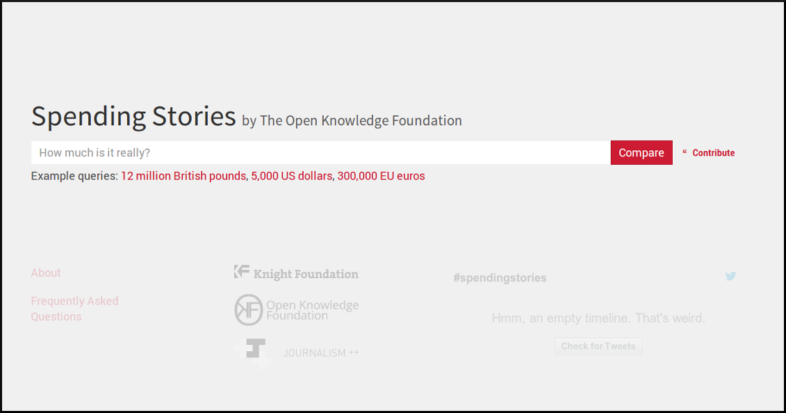

Historias de Gasto
En Construccion
al fin sabrás 'lo que vale un euro'
"Historias de gasto" será la versión en castellano de SpendingStories, el proyecto que te ayuda a contextualizar cantidades económicas.
Ejemplo: ¿Cuánto son 300 Millones de Euros? Lo que cuesta el mantenimiento de un hospital.
|  |
"En el ajo" estamos OpenKratio, OpenGov.cat y OpenSpending
¿Quieres ayudarnos a programar? ¿A traducir al castellano? ¿Tienes historias que contar? ¿Eres un periodista interesado en utilizar la herramienta?: Ponte en contacto con nosotros.